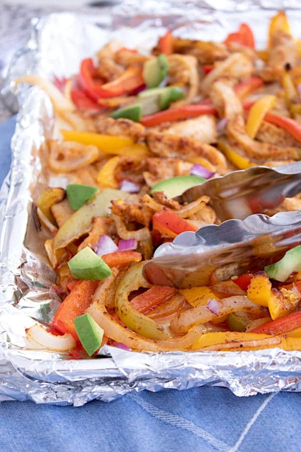

Sheet Pan Fajitas

Description:
A delicious and easy way to make fajitas!
Ingredients:
- 1 pound chicken breasts - sliced thinly
- 1 red pepper - sliced
- 1 green pepper - sliced
- 1 yellow pepper - sliced
- 1 onion - halved and cut slices
- 1/4 cup olive oil
- 2 teaspoons chili powder
- 1 teaspoon cumin
- 1/2 teaspoon garlic powder
- 1 teaspoon salt
- 1/2 teaspoon ground pepper
Steps:
- Set oven to 400
- In small bowl combine oil, chili powder, cumin, chili flakes, garlic, salt and pepper.
- Toss chicken, veggies and oil mixture together on a large sheet pan with one inch edge.
- Spread out evenly.
- Bake for 25-30 minutes until chicken is cooked and the veggies are soft with a crispy edge.
- Serve with tortillas, sour cream, avocado and all your favorite fajita fixins!